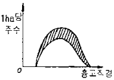
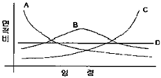
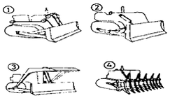
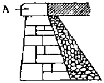

산림기사 (2010-05-09 기출문제)
1과목: 조림학
1. 제벌의 실행에서 고려해야 할 사항 중 옳지 않은 것은?
- 침입목이 맹아력이 강한 활엽수라면 맹아에 대한 대비책을 강구해야 한다.
- 소나무와 낙엽송 조림지에서는 식재 후 20~30년이 제벌 실행이 적절한 시기이다.
- 일반적으로 수관 간의 경쟁이 시작되고 조림목의 생육이 저해된다고 판단될 때 실시한다.
- 제벌의 시기는 나무의 고사상태를 알고 맹아력을 감소시키기 위하여 여름철에 실시하는 것이 좋다.
(정답률: 76%)

2. 건조에 의하여 생활력을 쉽게 잃게 되는 수종의 종자 저장에 적합한 보습저장은?
- 상온저장법
- 저온저장법
- 노천매장법
- 기건밀봉법
(정답률: 89%)
3. 동령림의 밀도 지수는 “C=H/D"와 같이 간단한 식으로 나타낼 수 있다. 여기서 C의 의미는 무엇인가? (단, 여기서 H는 수고, D는 흉고직경을 나타낸다.)
- 정밀도
- 세장도
- 생육영역
- 수관밀도
(정답률: 66%)
4. 천연림보육에 대한 생태적 설명으로 틀린 것은?
- 하층임분은 특별한 이유가 없는 한 그대로 두는 것이 좋다.
- 생육공간을 적당히 조절하며 적정 간격이 유지 될 수 있도록 간벌과 가지치기를 시행한다.
- 나무의 세력이 너무 왕성한 것은 제거하여 그 세력을 줄이고 미래목에 대한 영향이 없도록 한다.
- 미래목은 장차 미래에 효용가치가 높은 임목을 선정하되 실생묘보다 맹아목을 우선적으로 고려하여 선정하는 것이 좋다.
(정답률: 92%)
5. 묘목 간의 거리를 2m로 정방형 식재를 할 때 1ha당 소요 묘목본수는?
- 1000본
- 2500본
- 3500본
- 5000본
(정답률: 86%)
6. 그림과 같은 구성을 보이는 동령임분에서 빗금친 부분을 간벌하였다면 어떠한 간벌방식이 적용된것인가?

- 하층 간벌
- 상층간벌
- 택벌식 간벌
- 기계적 간벌
(정답률: 71%)
7. 소나무 임지를 교호대상개벌작업에 의해 갱신하려고 한다. 이때 일반적으로 가장 적당한 대폰은?
- 모수 수고의 약 0.5배 이하
- 모수 수고의 약 ½~4배
- 모수 수고의 약 5~6배
- 모수 수고의 약 8~9배
(정답률: 71%)
8. 열매의 종류를 구분함에 있어 자귀나무, 아카시나무, 주엽나무, 박태기나무의 열매는 다음 중 어디에 해당하는가?
- 협과
- 견과
- 장과
- 영과
(정답률: 87%)
9. 묘 포지를 경운(밭갈이) 작업할 때 나타나는 효과로 맞는 것은?
- 토양내 산소량이 감소한다.
- 토양의 보수력을 감소시킨다.
- 토양의 풍화장욕을 촌진시킨다.
- 토양내 탄산가스량은 영향이 없다.
(정답률: 87%)
10. 산림이나 묘포장 토양의 토양산도에 대하여 바르게 기술하고 있는 것은?
- PH 4.0~4.7인 토양은 망간, 알루미늄이 다량 용해되어 나무의 생육에 이롭다.
- PH6.6~7.3인 토양에서는 미생물의 활동이 왕성하고 양료의 이용이 높으며, 부식의 형성이 쉽게 진전된다.
- 묘포토양으로서는 PH6.5이상이 되어야 좋다.
- PH7.4~8.0읜 토양산도는 침엽수종의 생육에 유리하다.
(정답률: 88%)
11. 다음 중 나무의 결실주기가 가장 긴 것은?
- 자작나무류
- 전나무
- 낙엽송
- 오리나무류
(정답률: 71%)
12. 한 군집의 식생조사시 일정 면적에 있어서 어떤 종의 식물이 차지하는 면적의 비율로 계산하여 양적인 특성을 포시하는 척도가 되는 것은?
- 혼생도
- 피도
- 층화도
- 산재도
(정답률: 71%)
13. 산림생태계의 순환과정에서 질소의 손실을 가져오는 것은?
- 균류
- 낙엽
- 산불
- 질산화작용
(정답률: 90%)
14. 원생림이 파괴된 뒤에 회복된 산림을 무엇이라 하는가?
- 1차
- 2차
- 3차
- 복차림
(정답률: 84%)
15. 어미나무 작업법으로 갱신할 때 어미나무로 잔존시키는 양은 원래의임목 재적의 몇 %로 하는가?
- 10%
- 30%
- 40%
- 60%
(정답률: 84%)
16. 가지치기의 효과가 아닌 것은?
- 가지를 연료로 이용한다.
- 초살도가 큰 줄기를 생산한다.
- 산불시 수관화를 경감시킨다.
- 수광량을 증가시켜 하층목의 발생을 촉진한다.
(정답률: 79%)
17. 엽분석으로 수목의 영양상태를 진단하기에 가장 적당한 시기는?
- 3~4월
- 5~6월
- 7~8월
- 9~10월
(정답률: 71%)
18. 묘목양성에 대한 설명으로 옳은 것은?
- 밤나무에 흔히 적용하는 접목법은 복접이다.
- 용기묘 양성은 양묘비용이 많이 들지 않고 틀별한 양묘 기술이 필요 없는 장점이 있다.
- 발육이 완전하고 조직이 충실하며 측아의 발달이 잘 되어 있는 것이 우량묘의 조건이다.
- 모식물의 가지를 휘어지게 하여 땅속에 묻어 고정하고 발근하게 하는 방법은 압조법 또는 복조법이라 한다.
(정답률: 64%)
19. 100m2면적의 파종상에 참나무 종자를 파종하여 m2당 100본의 묘목을 남기려고 한다. 이 때 필요한 파종량(L)은?(단, 참나무 종자의 1L 당 평균 종자입수는 1000립, 종자의 순량률은 0.5, 종자발아율은 0.5, 그리고 묘목잔존율은 0.5로 한다.)
- 20 L
- 40 L
- 60 L
- 80 L
(정답률: 77%)
20. 다음 중 엽록소의 구성에 관계되는 것은?
- 황
- 인산
- 칼륨
- 마그네슘
(정답률: 88%)
2과목: 산림보호학
21. 다음 나무병 중 세균에 의한 병은?
- 뽕나무 오갈병
- 벚나무 뿌리혹병
- 소나무 잎떨림병
- 포플러 모자이크병
(정답률: 79%)
22. 한해 방제법으로 틀린 것은?
- 묘포에 있어서는 해가림을 하여 준다.
- 묘포지에서 경운과 파종을 평년보다 늦게 한다.
- 임내의 지피물을 보존시켜 토양의 건조를 완화시킨다.
- 관수는 일몰 전 또는 일몰 후에 토양 전체에 균일하게 스며들 정도까지 충분히 한다.
(정답률: 65%)
23. 소나무류, 잣나무류. 낙엽송 등 침엽수림에 많이 발생하며, 임지내의 모닥불자리 또는 산불발생지에서 많이 발생하는 수병은?
- 자주빛날개무늬병
- 리지나뿌리썩음병
- 뿌리혹선충병
- 침엽수 근주심재부후병
(정답률: 89%)
24. 야생동물의 서식에 필수적인 구성요소에 해당하지 않는 것은?
- 물
- 계절
- 먹이
- 은신처
(정답률: 89%)
25. 연소물의 열량이 50cal/g, 연소물의 양이 20ton/ha, 산불의 연소진행속도가 15m/min 일 때 산불의 강도 (KW/m)는 얼마인가?
- 100
- 1⑤
- 110
- 115
(정답률: 50%)
26. 호두나무잎벌레에 대한 설명으로 옳은 것은?
- 년 2회 발생하며 알로 월동한다.
- 년 2회 발생하며 유충으로 월동한다.
- 년 1회 발생하며 성충으로 월동한다.
- 년 1회 발생하며 유충으로 월동한다.
(정답률: 75%)
27. 어린잎이나 신엽에 피해가 심하며, 알루미늄 전해공장이나 인산질 비료공장에서 발출되어 피해를 주는 것은?
- 오존
- HF가스
- 아황산가스
- 염소 및 그 화합물
(정답률: 54%)
28. 솔잎혹파리, 솔껍질깍지벌레 등 주요 산림해충의 수간주사에 사용되는 살충제는?
- 포스파미돈 액제
- 트리클로르폰 액제
- 디플루벤주론 수화제
- 페니트로티온 수화제
(정답률: 72%)
29. 잣나무 털녹병균이 잣나무에서 만드는 포자는 어느 것인가?
- 녹포자
- 담자포자
- 여름포자
- 겨울포자
(정답률: 63%)
30. 대부분의 나무병은 다음 중 어느 병원체에 의하여 발생하는가?
- 바이러스
- 곰팡이(진균)
- 박테리아(세균)
- 파이토플라스마
(정답률: 84%)
31. 소나무재선충을 매개하는 솔수염하늘소의 설명 중 맞지 않는 것은?
- 년 1회 발생한다.
- 목질부속에서 3령 유충으로 월동한다.
- 성충의 우화시기는 5월 하순 8월 초순이다.
- 유충이 소나무류의 수피 및 형성층과 목질부를 식해한다.
(정답률: 77%)
32. 대추나무 빗자루병의 설명으로 옳은 내용은?
- 대표적인 병징은 잎의 황화이다.
- 병원은 Agrovacterium tumefaciens이다.
- 마름무늬매미충에 의하여 병원체가 매개된다.
- 병징이 나타난 부위의 외과적 수술로 치료효과를 얻을 수 있다.
(정답률: 83%)
33. 임연부에 대한 설명으로 틀린 것은?
- 임연부는 먹이 부족으로 고라니나 노루의 서식환경으로서는 부적당하다.
- 산림과 초지, 침엽수림과 활엽수림 등 다른 환경유형이 인접하는 곳을 말한다.
- 임연부에는 야생조류의 먹이가 많아 야생조류가 많이 서식할 수 있다.
- 임연부의 무성한 관목은 둥지를 만들기 쉽고 천적에게도 발견되기 어려운 이점이 있다.
(정답률: 83%)
34. 다음 중 파이토플라즈마에 의한 수병은?
- 감나무 시들음병
- 벚나무 빗자루병
- 낙엽송 잎떨림병
- 대추나무 빗자루병
(정답률: 91%)
35. 다음 중 해충의 임업적 방제법으로 볼 수 있는 것은?
- 임목보육
- 진동 이용
- 방사선 이용
- 훈증제 사용
(정답률: 77%)
36. 식엽성 해충이 아닌 것은?
- 대벌레
- 미국흰불나방
- 박쥐나방
- 참나무재주나방
(정답률: 87%)
37. 참나무 시들음병에 대한 설명으로 틀린 것은?
- 매개충은 광릉긴나무좀이다.
- 피해목의 변재부가 변생된다.
- 피해목은 초가을에 모든 잎이 낙엽된다.
- 매개충의 암컷등판에는 곰팡이를 넣는 균낭이 있다.
(정답률: 74%)
38. 파이토플라스마에 의한 나무병의 방제 약제는?
- 스트렙토마이신
- 엑티디이온 BR
- 가스가마이신
- 옥시테트라싸이클린
(정답률: 92%)
39. 잣 송이를 가해하여 잣 수확을 감소시키는 중요한 해충이며, 구과속의 가해부위에 벌레똥을 채워놓고 외부로도 똥을 배출하여 구과표면에 붙여 놓으며 신초에도 피해를 주는 해충은?
- 복숭아명나방
- 솔박각시나방
- 솔수염하늘소
- 솔알락명나방
(정답률: 71%)
40. 7월 하순 이후 산책을 하다 보면 참나무류 열매인 도토리가 달린 가지가 땅에 많이 떨어져 있는데 이것은 어떤 해충의 피해인가?
- 밤바구미
- 왕거위벌레
- 도토리바구미
- 도토리거위벌레
(정답률: 88%)
3과목: 임업경영학
41. 산림환경자원으로서 야생동물의 서식밀도는 어떻게 표시하는가?
- 10ha 당의 마리 수 (여름철)
- 100ha 당의 마리 수 (여름철)
- 200ha 당의 마리 수 (여름철)
- 300ha 당의 마리 수 (여름철)
(정답률: 85%)
42. 다음 중 지황조사의 항목이 아닌 것은?
- 기후
- 지세
- 입목도
- 지위
(정답률: 56%)
43. 수간석해를 할 때 반경은 보통 몇 년 단위로 측정하는가?
- 2년
- 3년
- 5년
- 10년
(정답률: 76%)
44. 법정림에 있어서 윤벌기가 50년인 경우, 법정년벌율(법정수확율)은 몇 %인가?
- 2%
- 3%
- 4%
- 5%
(정답률: 80%)
45. 휴양관리에 있어 시설적 수용력에 중요시되는 영향인자가 아닌 것은?
- 단위면적당 사람 수
- 방문객/관리요원의 비율
- 야영장을 이용하는 사람 수
- 주차장을 이용하는 사람 수
(정답률: 63%)
46. 다음 설명 중에서 야외 휴양관리에 있어서 환경해설의 역할과 가장 거리가 먼 것은?
- 양질의 휴양경험과 만족을 얻게 한다.
- 휴양 제공기관의 정책결정에 영향을 준다.
- 이용객 관리에 대한 방향설정에 지침이 될 수 있다.
- 상세한 설명에 의해 다시 방문할 필요가 없도록 한다.
(정답률: 88%)
47. 제지회사가 펄프우너료를 공급하기 위하여 경영하는 산림의 경영형태는?
- 주업적 입업경영
- 부차적 입업경영
- 종속적 입업경영
- 비종속적 입업경영
(정답률: 68%)
48. 임지기망가가 최대값에 도달하는 시기의 계산식은 인자에 따라 크기에 영향을 주는데 이에 관한 설명으로 틀린 것은?
- 이율이 낮을수록 빨리 나타난다.
- 간벌수익이 클수록 빨리 나타난다.
- 채취비가 적을수록 빨리 나타난다.
- 주벌수익의 증대속도가 빨리 감퇴할수록 빨리 나타난다.
(정답률: 68%)
49. 입목재적을 측정할 때 직경의 측정위치에 따른 분류에서 비교원주의 직경을 수고의 1/n되는 곳의 직경과 같게 하여 정한 형수를 무엇이라고 하는가?
- 정형수
- 수간형수
- 절대형수
- 흉고형수
(정답률: 80%)
50. 산림에서 임목을 벌채하면 야생동물의 먹이로서 초류생산은 증가하지만 자연경관의 가치는 감소하는데 이러한 2가지 생산물의 생산관계를 무엇이라고 하는가?
- 결합생산
- 경합생산
- 보완생산
- 보합생산
(정답률: 63%)
51. 자연휴양림의 수림공간유형 중에서 수림피도가 50% 전후이면서 산림의 생산적 기능의 유지와 동시에 레크리에이션의 기능에 걸맞는 관리체계를 확립해야 하는 수림형태는?
- 정원형
- 밀생림형
- 소생림형
- 산개림형
(정답률: 62%)
52. 현재년에서 벌채 예정년가지의 임목기망가식은?
- 주벌 및 간벌수확 전가합계 - 지대 및 관리비 후가합계
- 주벌 및 간벌수확 전가합계 - 지대 및 관리비 전가합계
- 주벌 및 간벌수확 후가합계 - 지대 및 관리비 후가합계
- 주벌 및 간벌수확 후가합계 - 지대 및 관리비 전가합계
(정답률: 80%)
53. 수익 비용율법을 투자의 의사결정 방법으로 사용할 때 투자 가치가 있는 사업으로 평가되는 것은?(단, B는 수익이고 C는 비용이다.)
- B/C율 ＞ 0
- B/C율 ＜ 0
- B/C율 ＞ 1
- B/C율 ＜ 1
(정답률: 73%)
54. 야외 휴양 서비스 및 관리에 있어 보통 관리자의 책임에 해당하지 않는 것은?
- 제공된 서비스의 질 혹은 목적이 얼마나 달성 되었는가와 관련된 프로그램상의 책임
- 관리요원들의 사회적 볼리 증진의 만족에 대한 책임
- 적절한 예산 편성을 통해 충분한 수익을 얻을수 있는 금액이 투입되었는가에 대한 회계상의 책임.
- 올바르고 합당한 과정에 의해 서비스가 제고공되었는지와 관련된 과정상의 책임
(정답률: 79%)
55. 다음 그림과 같은 4가지 형태의 산림의 구조 중 여러 계층의 임목이 골고루 이상적인 구성을 하고 있어서 보속생산이 가능한 산림구조는?

- A형 산림구조
- B형 산림구조
- C형 산림구조
- D형 산림구조
(정답률: 79%)
56. 임업이율은 보통 이율보다 낮게 평정되고 있다. 그 이유로서 타당치 않은 것은?
- 산림투자의 위험성
- 산림소유의 안전성
- 임료 수입의 유동성
- 산림의 관리경영의 간편성
(정답률: 67%)
57. 산림경영계획의 체계에 대한 설명으로 옳은 것은?
- 국가적 또는 지역적인 관점에서의 종합적인 계획에 근간을 두고 있다.
- 산림청장은 지역산림계획을 5년 단위로 공표하거나 상황에 따라 수정한다.
- 국유림을 경영 관리하는 기관은 산림청 - 국유림관리소 - 지방산림청 순서체계로 구성된다.
- 산림기본계획은 지역산림계획에 따라 특별시장, 광역시장, 도지사 및 산림청장이 수립한다.
(정답률: 65%)
58. 어떤 임지는 육림용으로 사용할 수도 있고, 목축용으로 사용할 수도 있다,. 이 때 임지를 육림용으로 사용하려면 목축용으로 사용함으로써 얻을 수 있는 수익을 포기해야 하는데 이 때 발생하는 원가를 무엇이라 하는가?
- 매목원가
- 한계원가
- 증분원가
- 기회원가
(정답률: 87%)
59. 취득원가 3000만원, 잔존가액 100만원인 목재운반용 트럭이 있다. 이 트럭의 총운행가능거리가 10만Km이고 실제 운행거리가 4만 Km이면, 생산량 비례법에 의한 충감가상각액은?
- 10,600,000원
- 11,600,000원
- 12,600,000원
- 13,600,000원
(정답률: 83%)
60. 기계톱을 100만원에 구입하여 내용 년수를 10년으로 하고, 폐기가가 20만원일 때, 정액법에 의한 년간 감가상각비는 얼마인가?
- 15만원
- 10만원
- 8만원
- 5만원
(정답률: 83%)
4과목: 임도공학
61. 임도의 밀도가 높을수록 산지의 개발 또한 높아진다. 임도 밀도를 산출하기 위한 방법으로 해석적 방법과 경험적 방법이 있는데 해석적 방법의 설명으로 적절한 것은 어느 것인가?
- 예정노선의 노선도를 작성하지 않고 순수하게 계산만으로 이론적 최적임도 밀도를 산출하는 것
- 예정 개설 노선의 노선도를 작성하고 계산과 이론으로 최적임도를 산출하는 것
- 몇 개의 예정노선을 계획하고 이익과 비용에 의해 비교 판단하는 것
- 몇 개의 예정노선을 계획 작성하고 임지마다 최적의 노선배치에 의한 최적 임도를 선정 하는 것
(정답률: 54%)
62. 컴퍼스측량시에 일차에 대한 설명으로 맞는 것은?
- 오전 9시경이 최대이고, 오후 2시경이 최소이다.
- 오전 9시경이 최소이고, 오후 2시경이 최대이다.
- 오전 11시경이 평균이고, 오후 2시경이 최소이다.
- 오전 11시경이 평균이고, 오후 2시경이 최대이다.
(정답률: 61%)
63. 산림관련 규정에 간선임도의 설계에 대한 설명으로 틀린 것은?
- 길어깨는 차도의 양측에 설치한다.
- 길어깨의 너비는 50cm~1m의 범위로 한다.
- 배향곡선은 중심선 반지름이 10m 이상으로 설치한다.
- 임도의 유효너비는 길어깨 및 옆도랑의 너비를 함친 3m를 기준으로 한다.
(정답률: 80%)
64. 아래 그림에서 각 불도저의 번호와 명칭이 바르게 나열된 것은?

- ①스트레이트도저 ②앵글도저 ③버킷도저 ④레이크도저
- ①버킷도저 ②앵글도저 ③스트레이트도저 ④레이크도저
- ①스트레이트도저 ②버킷도저 ③트리도저 ④레이크도저
- ①스트레이트도저 ②앵글도저 ③트리도저 ④레이크도저
(정답률: 59%)
65. 임도 구조와 구성요소에 대한 상호 관련내용이 맞도록 짝지어 있지 않은 것은?
- 시거 - 노체길
- 어깨 - 횡단선형
- 최급 물매 - 종단선형
- 최소 곡선 반지름 - 평면선형
(정답률: 68%)
66. 임도시공현장에서의 안전사고 대책으로 가장 부적당한 것은?
- 시공기계 기종이 선정되면 사용 전 후에 여러 가지 안전대책을 강구할 것
- 노무자에게 작업목적과 시공상의 문제점에 대하여 충분히 숙지시킬 것
- 기계회시공에는 여러 가지 재해가 발생할 위험이 있으므로 안전대책을 마련할 것
- 작업방의 정리정돈은 작업의 편위를 위하여 작업상태 그대로 둘 것
(정답률: 87%)
67. 임도노선의 곡선설정시 사용되는 방법 중 해당되지 않는 것은?
- 산출법
- 진출법
- 교각법
- 편각법
(정답률: 71%)
68. 막깬돌이나 잡석을 쌓을 때 정해진 접축부를 만들지 않고 쌓기 때문에 작은 외력에도 돌이 빠지거나 변형되기 쉬운 것은?
- 꼬치쌓기
- 이마대기
- 새입붙이기
- 참쌓기
(정답률: 59%)
69. 임업토목시공 작업에서 넗은 장소의 적재용으로 적합한 기계는?
- 백호우
- 불도우저
- 트리도우저
- 모터그레이더
(정답률: 44%)
70. 임도 절개지 처리공사시나 양반으로 된 급경사 비탈면을 시멘트모르타르 또는 콘크리트 뿜어붙이기 공법으로 처리할 경우 한냉지방에 가장 알맞은 시공 두께는?
- 1~2 cm
- 5~6 cm
- 8~9 cm
- 10 cm이상
(정답률: 61%)
71. 다음 중 비탈녹화 공법의 종류에 속하지 않는 것은?
- 비탈선떼붙이기 공법
- 떼단쌓기 공법
- 분사식 파종 공법
- 비탈격자틀붙이기 공법
(정답률: 74%)
72. 측구(콘크리트관)에 흐르는 물의 유적이 0.35m2이고, 측구를 흐르는 물의 평균 유속이 4m/s 일 때 유량을 구하면?
- 1.4 m3/s
- 2.0 m3/s
- 2.8 m3/s
- 3.5 m3/s
(정답률: 87%)
73. 일반적으로 흙쌓기는 시공 후 시일이 경과하면 수축하여 용적이 감소되고 시공면이 침하한다. 그러므로 더쌓기를 해야 하는데 그 양은 일반적으로 흙쌓기 높이의 몇% 정도로 해야 하는가?
- 1%
- 3%
- 10%
- 20%
(정답률: 79%)
74. 등고선의 성질을 설명한 것 중 옳지 않은 것은?
- 등고선은 도면내나 외에서 폐합하는 폐곡선이다.
- 등고선은 분수선과 항상 평행이다.
- 동등한 경사의 지표에서 양등고선의 수평거리는 서로 같다.
- 동일등고선상에 있는 모든 점은 같은 높이이다.
(정답률: 68%)
75. 벌근 지름이 60cm인 입목을 벌도하고자 한다. 수구의 깊이는 몇 cm 정도가 가장 적당한가?
- 4~12 cm
- 12~20 cm
- 20 ~28 cm
- 28~36 cm
(정답률: 56%)
76. 임도를 설계하고자 할 때 가장 먼저 실시해야 할 일은?
- 예측
- 답사
- 설계서 작성
- 예비조사
(정답률: 87%)
77. 보통 모래는 흙 입자 지름이 몇 mm의 범위인가?
- 0.0⑤ mm ~ 0.42 mm
- 0.075 mm ~ 2 mm
- 0.42 mm ~ 2 mm
- 2 mm ~ 4 mm
(정답률: 60%)
78. 노동재해의 원인을 인적요인, 물적 요인으로 나눌 때 물적 요인에 해당되지 않는 것은?
- 보호장비의 불착용
- 작업방법의 부적당
- 기계장비의 밀집배치
- 기계장비의 안전장치 불완전
(정답률: 63%)
79. 양단면의 면적이 각각 65m2, 30m2 이고 중앙단면의 면적이 40m2이며 끝단면부에서 중앙단면부까지의 높이가 20m일 때 체적을 각주공식으로 구하면?
- 560m3
- 1130m3
- 1700m3
- 1950m3
(정답률: 48%)
80. 컴퍼스측량에서 전시로 시준한 방위가 Nα°E일 때 후시로 시준한 역방위를 구하면?
- Nα°S
- Nα°W
- Sα°E
- Sα°W
(정답률: 87%)
5과목: 사방공학
81. 댐 방수면의 세굴 방지를 위해 설치하는 물받이는 일반적으로 댐 높이와 월 유수심의 합의 몇 배로 하는 것이 좋은가?
- 0.5 ~ 1.0 배
- 1.0 ~ 1.5 배
- 1.5 ~ 2.0 배
- 2.0 ~ 2.5 배
(정답률: 71%)
82. 다음 공작물 중 산복공사에 속하지 않는 것은?
- 산비탈흙막이
- 비탈다듬기
- 기슭막이
- 산비탈수로
(정답률: 81%)
83. 돌망태 댐의 특징이 아닌 것은?
- 돌망태의 유연성을 이용하여 조립 및 축설한다.
- 기초의 세굴, 측압, 지반침하 등에 즉시 사용하여 변형하는 특성을 이용한다.
- 터파기는 굴착깊이 1m 정도가 좋으며, 높이는 3m이하로 한다.
- 내구성이 매우 뛰어나므로 반영구적 공작물로 이용한다.
(정답률: 75%)
84. 사방댐에서 대수면이란?
- 댐의 천단부분
- 댐의 하류측 사면
- 댐의 상류측 사면
- 방수로 부분
(정답률: 81%)
85. 흙댐에 관한 설명 중 잘못된 것은?
- 포화수선이 댐밑 외부에 있어야 하는데 심벽은 포화수선을 위로 올려준다.
- 유역면적이 비교적 좁고 유량과 유송토사가 적지만 계폭이 비교적 넗은 경우에 건설한다.
- 댐의 안전을 위해 심벽을 넣는데 심벽 재료로서 사질토나 점질토를 사용한다.
- 일반적으로 흙댐 마루의 나비는 2~5m 정도로 한다.
(정답률: 65%)
86. 녹화용 식물생육에 필요한 토양의 상태를 잘못 설명한 것은?
- 부식질이 풍부할 것
- 투수성과 통기성이 양호할 것
- 토양 PH가 가능한 알카리성일 것
- 질소, 인산 및 칼리를 고루 포함할 것
(정답률: 78%)
87. 특별한 규격에 맞게 깨낸 돌로서 산림토목의 축석에 사용되는 석재는?
- 견치돌
- 마름돌
- 호박돌
- 들돌
(정답률: 86%)
88. 아래의 그림과 같은 돌쌓기벽에서 A의 명칭은 무엇인가?

- 갓돌
- 뒷채움돌
- 모서리돌
- 굄돌
(정답률: 89%)
89. 사방댐의 설계요인을 틀리게 설명한 것은?
- 댐의 위치는 계상에 암반이 존재해야만 설치 할 수 있다.
- 계획계상물매는 현 계상물매의 1/2~2/3정도가 실용적인 것으로 알려져 있다.
- 단독의 높은 댐과 연속된 낮은 댐군의 선택은 그 지역의 토사생산의 특성과 시공 및 유지의 난이도를 충분히 검토하여 결정한다.
- 종·횡침식이 일어나는 구간이 긴 구간에서는 원칙적으로 계단상 댐을 계획한다.
(정답률: 72%)
90. 등산로 복구 및 정비지침과 거리가 먼 것은?
- 경사도에 따라 다양한 바닥시설을 한다.
- 통행량에 따라 등산로 폭을 다양하게 조성한다.
- 이용규제를 위하여 다양한 경계울타리를 설치한다.
- 자연발생적 등산로는 먼저 식생을 복우너하고 지형을 복구한다.
(정답률: 80%)
91. 와이어로프에서 선접촉방식의 평행꼬임 중 기본형이 아닌 것은?
- 시일형(S)
- 왁스형(WX)
- 필러형(Fi)
- 워링톤형(W)
(정답률: 62%)
92. 산복사방에서 산비탈흙막이 중 콘크리트벽 흙막이의 시공시 원칙적으로 높이는 몇 m 이하인가?
- 1m
- 3m
- 4m
- 6m
(정답률: 65%)
93. 비탈돌쌓기공법의 설명으로 틀린 것은?
- 비탈면물매가 1:1보다 완만한 경우는 돌붙이기라 한다.
- 찰쌓기공법에는 2~3m2마다 물빼기 구멍을 설치한다.
- 돌쌓기의 물매는 일반적인 메쌓기의 경우 1:0.3이다.
- 돌쌓기는 일곱에움 이상 아홉에움 이하가 되도록 한다.
(정답률: 80%)
94. 시우량법을 이용하여 최대홍수유량을 산정할 때, 임상이 좋은 산지유역의 유거계수는 일반적으로 얼마를 적용하는가?
- 0.35~0.45
- 0.45~0.65
- 0.65~0.85
- 0.85이상
(정답률: 48%)
95. 100마력짜리 엔진을 KW 단위로 나타내면 약 몇 KW인가?
- 50KW
- 75KW
- 100KW
- 125KW
(정답률: 65%)
96. 비탈면 붕괴의 발생 메커니즘에 대한 설명으로 틀린 것은?
- 비탈면에 수림의 성립은 하중을 증가시켜 전수직응력이 커진다.
- 비탈면에 근계가 발달하면 점착력과 내부마찰각에 영향을 준다.
- 비탈면에서의 점착력과 내부마찰각은 표층의 종류 및 함수상태에 따라 다르다.
- 강우 등으로 토층과 하부의 경암 사이에 간극수압이 발생하면 유효수직응력은 그 만큼 증대된다.
(정답률: 62%)
97. 목재파쇄기의 구입가격이 5000만원, 내용연수가 10년, 기계폐기가격은 구입가격의 10%일 때 목재파쇄기의 연간 감가상각비는?
- 450만원
- 500만원
- 550만원
- 600만원
(정답률: 78%)
98. 와이어로프의 안전계수가 6이고 절단하중이 360kg이라면 이 와이어로프의 최대 장력은?
- 60kg
- 90kg
- 120kg
- 180kg
(정답률: 85%)
99. 계간사방의 직접적인 목적이라 할 수 없는 것은?
- 붕괴지의 인공복구를 촉진
- 하류에의 토사유출을 억제
- 산각의 밑부분과 산기슭의 고정
- 계류의 바닥과 계안의 침식을 방지
(정답률: 77%)
100. 산복사방공사에서 현지조사시 실시해야 할 내용이 아닌 것은?
- 시공 여부 검토
- 지형 측량
- 적산조건의 조사
- 공법 및 공작물 검토
(정답률: 50%)